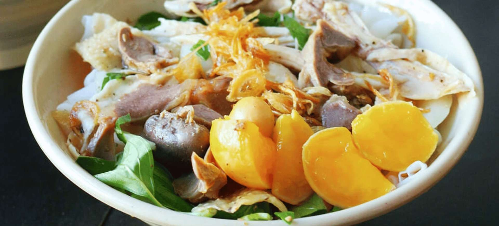
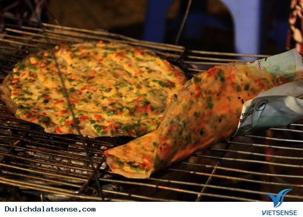
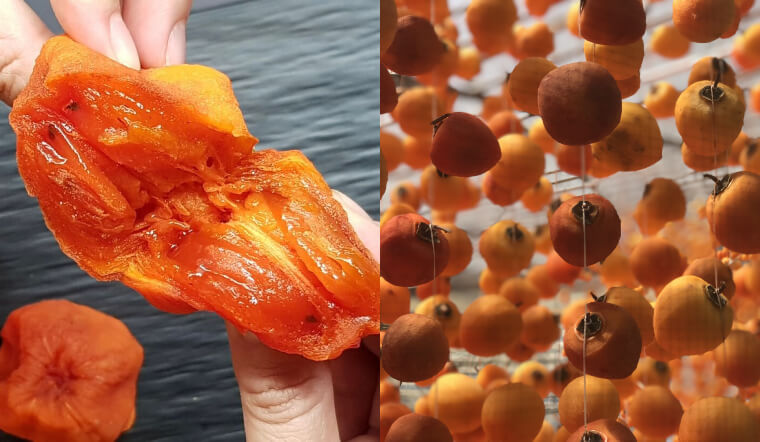
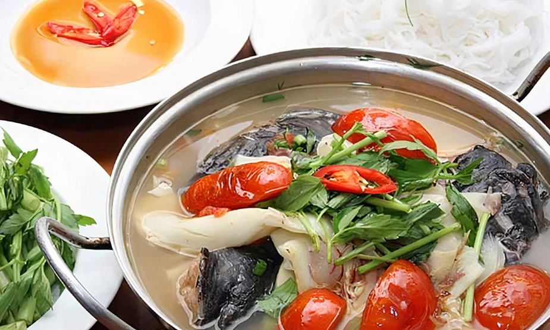
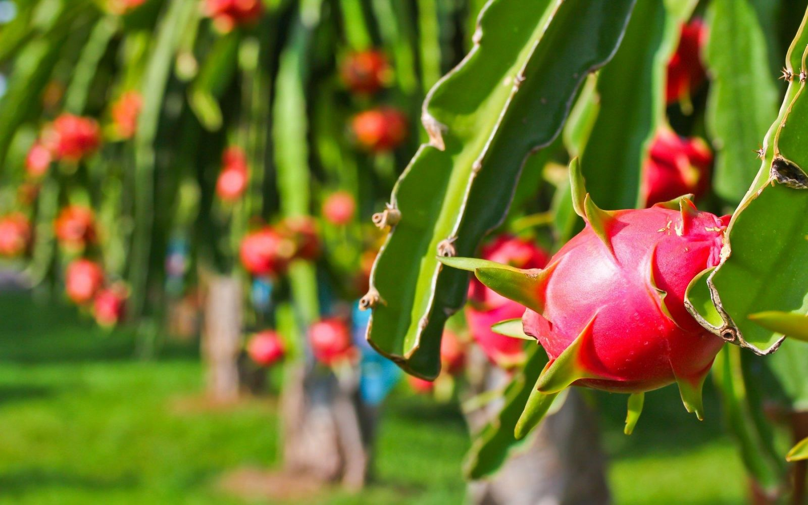

GIỚI THIỆU ẨM THỰC TỈNH LÂM ĐỒNG
Trước khi sáp nhập,đặc sản tỉnh Lâm Đồng tập trung chủ yếu vào lợi thế khí hậu ôn hòa và thổ nhưỡng đất đỏ bazan vùng cao nguyên, với định hướng phát triển nông nghiệp công nghệ cao. Sau khi sáp nhập với Đắk Nông (Tây Nguyên) và Bình Thuận (Ven Biển), tỉnh Lâm Đồng mới sẽ sở hữu sự đa dạng sinh học và sản vật lớn nhất cả nước, kết hợp đặc trưng của Cao Nguyên – Núi Rừng – Biển Cả.
1.Bánh ướt lòng gà

Bánh ướt lòng gà là một món ăn đặc sản nổi tiếng ở Đà Lạt và Vũng Tàu, kết hợp giữa bánh ướt mềm mịn tráng mỏng và các loại lòng gà xé phay. Món này thường ăn kèm với rau sống, hành phi, giá đỗ và nước chấm chua ngọt đặc trưng, tạo nên hương vị đậm đà, hấp dẫn. Bánh ướt được làm từ bột gạo tráng mỏng, tạo độ mềm, mịn và có màu trắng trong. Thường ăn kèm với rau răm, giá đỗ và các loại rau thơm khác. Nước mắm pha chua ngọt, đậm đà, là thành phần không thể thiếu. Sự kết hợp giữa bánh ướt mềm dai, lòng gà giòn sần sật và nước chấm chua ngọt tạo nên hương vị hài hòa, lôi cuốn.
Giới thiệu Quán:
- Quán Bảo Hân: số 51 đường Yersin
- Quán Liên:số 44 đường Tăng Bạt Hổ, phường Xuân Hương - Đà Lạt.
- Bánh ướt lòng gà Đà Lạt 17 Tăng Bạt Hổ: số 17 đường Tăng Bạt Hổ.
2.Lẩu bò Ba Toa

Là món lẩu bò nổi tiếng có nguồn gốc từ Đà Lạt, với nước lẩu đậm đà từ xương bò ninh kỹ, kết hợp với các loại thịt bò và nội tạng đa dạng như nạm, gân, sách, bò viên, v.v.. Tên gọi "Ba Toa" bắt nguồn từ chữ "abattoir" (lò mổ) trong tiếng Pháp, do khu vực này từng tập trung nhiều lò mổ bò vào thời Pháp thuộc. Nước lẩu được ninh từ xương bò tươi, có vị đậm đà đặc trưng. Các loại thịt và nội tạng bò tươi ngon, đa dạng như nạm, gân, sách, bò viên, tim bò, lưỡi bò, v.v.. Ăn kèm với rau xanh (như cần, ngải cứu, cải thảo), khoai môn, hủ tiếu, mì, bún tươi, óc heo, tuỷ bò. Nhúng các loại thịt, rau, nấm vào nồi lẩu nóng hổi và ăn kèm với bún tươi hoặc mì. Món này ăn cùng nước chấm thường pha kèm nước chao với sa tế để tăng hương vị béo cay đặc trưng.
Giới thiệu Quán:
- Quán bò ba toa Nhà Gỗ:29/1 Hoàng Diệu, Đà Lạt, Lâm Đồng
- Quán Lẩu Bò Ba Toa Đà Lạt - 34 Nguyễn Văn Trỗi:34 Nguyễn Văn Trỗi, Phường 1, Đà Lạt, Lâm Đồng
- Quán Lẩu Bò Ba Toa Đà Lạt - 26 Phan Đình Phùng:26 Phan Đình Phùng, Phường 2, Đà Lạt, Lâm Đồng
3. Bánh Tráng Nướng

Là một món ăn vặt đường phố phổ biến, được làm từ lớp bánh tráng mỏng nướng giòn trên lửa than hoặc bếp gas, sau đó phủ lên các loại topping hấp dẫn như trứng, hành lá, xúc xích, khô bò, phô mai, và rưới kèm các loại sốt. Món này thường được ví như "pizza Việt Nam" vì sự đa dạng về nhân tùy theo khẩu vị của người thưởng thức. Bánh tráng mỏng được nướng trên bếp than hồng hoặc bếp gas cho đến khi giòn rụm và tỏa mùi thơm hấp dẫn. Bánh thường được ăn kèm với các loại sốt như tương ớt và sốt me, tạo nên hương vị đậm đà. Sự kết hợp giữa vỏ bánh giòn tan và lớp nhân béo ngậy, thơm ngon, cay cay tạo nên một hương vị tổng hòa, hấp dẫn khó cưỡng.
Giới thiệu Quán:
- Quán chị Huyền:số ½ Nhà Chung, cạnh nhà thờ Con Gà, phường Xuân Hương - Đà Lạt
- Quán Bánh Tráng Nướng Cô Út:26 Hoàng Diệu, Phường 5, Đà Lạt, Lâm Đồng
- Quán Bánh Tráng Nướng - 26 Phan Đình Phùng:26 Phan Đình Phùng, Phường 2, Đà Lạt, Lâm Đồng
4. Dâu tây Đà Lạt

Là một đặc sản nổi tiếng của tỉnh Lâm Đồng, Việt Nam, nổi bật với hương vị thơm ngon, ngọt thanh và mọng nước. Loại dâu này được trồng phổ biến bằng các phương pháp canh tác hiện đại như thủy canh trong nhà kính, sử dụng công nghệ cao giúp cây phát triển tốt quanh năm, đảm bảo chất lượng và không hóa chất. Dâu tây Đà Lạt không chỉ là đặc sản phục vụ nhu cầu trong nước mà còn là mặt hàng xuất khẩu có giá trị cao. Vườn dâu cũng trở thành điểm đến du lịch hấp dẫn, nơi du khách có thể tham quan, trải nghiệm hái dâu và thưởng thức trái cây tươi.
Giới thiệu Quán:
- Vườn dâu tây chú Hùng:Số 143 Thánh Mẫu, Phường 7, Thành phố Đà Lạt, Lâm Đồng
- Vườn dâu tây Hiệp Lực:Số 17 – TK 144B Vòng Lâm Viên, Phường 8, Thành phố Đà Lạt, Lâm Đồng.
- Vườn dâu Nhật Cô Thảo Đà Lạt:Số 162 Thánh Mẫu, phường 7, Thành phố Đà Lạt, Lâm Đồng
5. Hồng giòn, Hồng sấy dẻo

- Hồng giòn là loại hồng tươi có vị ngọt thanh, giòn tan, trong khi hồng sấy dẻo là hồng giòn được sấy khô ở nhiệt độ vừa phải (khoảng 60−70 độ C) để giữ lại hương vị tự nhiên, trở nên mềm, dai hơn và có thời gian bảo quản lâu hơn.
Cả hai đều là những đặc sản được ưa chuộng với nhiều lợi ích sức khỏe nhờ giàu vitamin và chất chống oxy hóa.
- Hồng giòn có vỏ màu vàng cam hoặc đỏ cam, ruột màu cam đậm, khi chín ăn có vị ngọt thanh và độ giòn đặc trưng.
Là loại quả ăn được có nguồn gốc từ châu Á, được trồng và phát triển mạnh mẽ ở nhiều vùng có khí hậu mát mẻ như Đà Lạt.
Giàu chất xơ, vitamin C, vitamin A và các chất chống oxy hóa, giúp cải thiện hệ tiêu hóa, tăng cường miễn dịch và tốt cho mắt.
- Hồng sấy dẻo là hồng giòn sau khi được sấy khô, có màu nâu sẫm, lớp vỏ bên ngoài có thể hơi dẻo hoặc bám một lớp phấn trắng.
Hương vị ngọt đậm đà hơn so với hồng tươi, nhưng vẫn giữ được hương thơm đặc trưng.
Giữ lại gần như nguyên vẹn các vitamin và khoáng chất có trong hồng tươi.
Giới thiệu Quán:
- Vườn hồng Lễ Vân:45 Khe Sanh, phường Xuân Hương – Đà Lạt.
- Vườn hồng Berry Garden:phường Xuân Trường – Đà Lạt
- Dalavi:27/6E Yersin
6. Lẩu Cá Lăng Sêrêpôk

Lẩu cá lăng Sêrêpôk là đặc sản của vùng Tây Nguyên, nổi tiếng với hương vị độc đáo của cá lăng từ sông Sêrêpôk. Món lẩu này sử dụng cá tươi, ngọt thịt, ít xương, được tẩm ướp cầu kỳ, kết hợp với các loại rau rừng đặc trưng, tạo nên vị chua, cay, ngọt, đắng xen lẫn của các nguyên liệu tự nhiên. Vị chua của cà chua, măng chua, vị cay của ớt và một chút đắng của các loại rau rừng như cà, lá pắc cum. Quy trình chế biến khá cầu kỳ, đòi hỏi sự điêu luyện để giữ trọn hương vị. Cá được làm sạch, khía dọc hai bên thân và tẩm ướp với nước riềng, nghệ, mẻ, mắm tôm, nước mắm. Thường đi kèm với các loại rau rừng như rau muống, rau rút, cọng súng, kèo nèo, hoa chuối, và đôi khi có thêm sung, vả muối.
Giới thiệu Quán:
- Phương Dung quán:126 Quốc Lộ 14 – Xã Hòa Phú – Buôn Ma Thuột – Đắk Lắk
- Lẩu cá lăng Mỹ Lan:số 112, QL14 – thôn 7 – Hòa Phú – Tp. BMT – Đắk Lắk.
- Quán lẩu cá lăng mơ:QL14, xã Hòa Phú, Thành phố Buôn Ma Thuột, tỉnh Đắk Lắk.
7. Cơm lam

Cơm lam là món ăn đặc trưng của các dân tộc vùng núi, đặc biệt là Tây Bắc và Tây Nguyên, được làm bằng cách cho gạo nếp vào ống tre, nứa tươi rồi nướng chín trên lửa. Món cơm này mang hương vị thơm ngọt, dẻo bùi tự nhiên của gạo nếp hòa quyện với mùi thơm đặc trưng của tre nứa, thường được ăn kèm với muối vừng, muối riềng hoặc các món nướng như gà.
Giới thiệu Quán:
- Gà nướng cơm lam Thảo Nguyên Đà Lạt:KDL Thung Lũng Vàng, phường Lang Biang – Đà Lạt.
- Cơm lam gà nướng Nam Anh Phát Đà Lạt:36 Mạc Đĩnh Chi, phường Xuân Hương – Đà Lạt.
- Gà nướng cơm lam Đà Lạt Lửa Hồng:2 Trần Hưng Đạo, phường Xuân Hương – Đà Lạt
8. Thanh Long Bình Thuận

Thanh long Bình Thuận là cây trồng chủ lực, đóng vai trò quan trọng trong kinh tế tỉnh này, với diện tích lớn nhất cả nước, hơn 26.550 ha, và sản lượng hàng trăm nghìn tấn mỗi năm. Vùng đất này được mệnh danh là "thủ phủ thanh long" nhờ khí hậu và thổ nhưỡng lý tưởng, với đặc trưng là những vườn thanh long trải dài bạt ngàn hai bên đường quốc lộ.
Giới thiệu Quán:
- Vườn thanh long Lâm Xuân Phúc:nằm tại thôn Đại Thành, xã Mường Mán, huyện Hàm Thuận Nam.
- Vườn thanh long của chú Nguyễn Văn Chín:nằm tại xã Hàm Mỹ, huyện Hàm Thuận Nam.
- Vườn thanh long Thanh Long Phát:nằm tại thôn Phú Lạc, xã Hàm Chính, huyện Hàm Thuận Bắc.
9. Nước mắm Phan Thiết

Nước mắm Phan Thiết là một đặc sản trứ danh của Bình Thuận, nổi tiếng với quy trình ủ chượp truyền thống từ cá cơm tươi và muối biển, tạo nên hương vị đậm đà, thơm ngon và màu sắc vàng rơm đặc trưng. Thương hiệu nước mắm này có lịch sử hơn 200 năm phát triển, đã được bảo hộ về nguồn gốc xuất xứ và là một trong những gia vị không thể thiếu trong bữa ăn gia đình Việt. Sử dụng cá cơm tươi đánh bắt tại vùng biển Phan Thiết, đặc biệt là cá cơm than, để đảm bảo vị ngọt tự nhiên và hàm lượng đạm cao. Hương vị đậm đà, thơm nồng đặc trưng, vị mặn vừa phải và có hậu vị ngọt tự nhiên, không gắt.
Giới thiệu Quán:
- Nước mắm Tĩn:360 Nguyễn Thông, phường Phú Hài, thành phố Phan Thiết, tỉnh Bình Thuận.
- Nước mắm Hải Thắng:
- Cơ sở 1:Đường Trường Chinh, phường Phú Tài, thành phố Phan Thiết, tỉnh Bình Thuận.
- Cơ sở 2:2/2 và 188 Nguyễn Thông, phường Phú Hài, thành phố Phan Thiết, tỉnh Bình Thuận.
- Nước mắm Thanh Thể:59 Nguyễn Thông, Phường Phú Hài, thành phố Phan Thiết, tỉnh Bình Thuận.